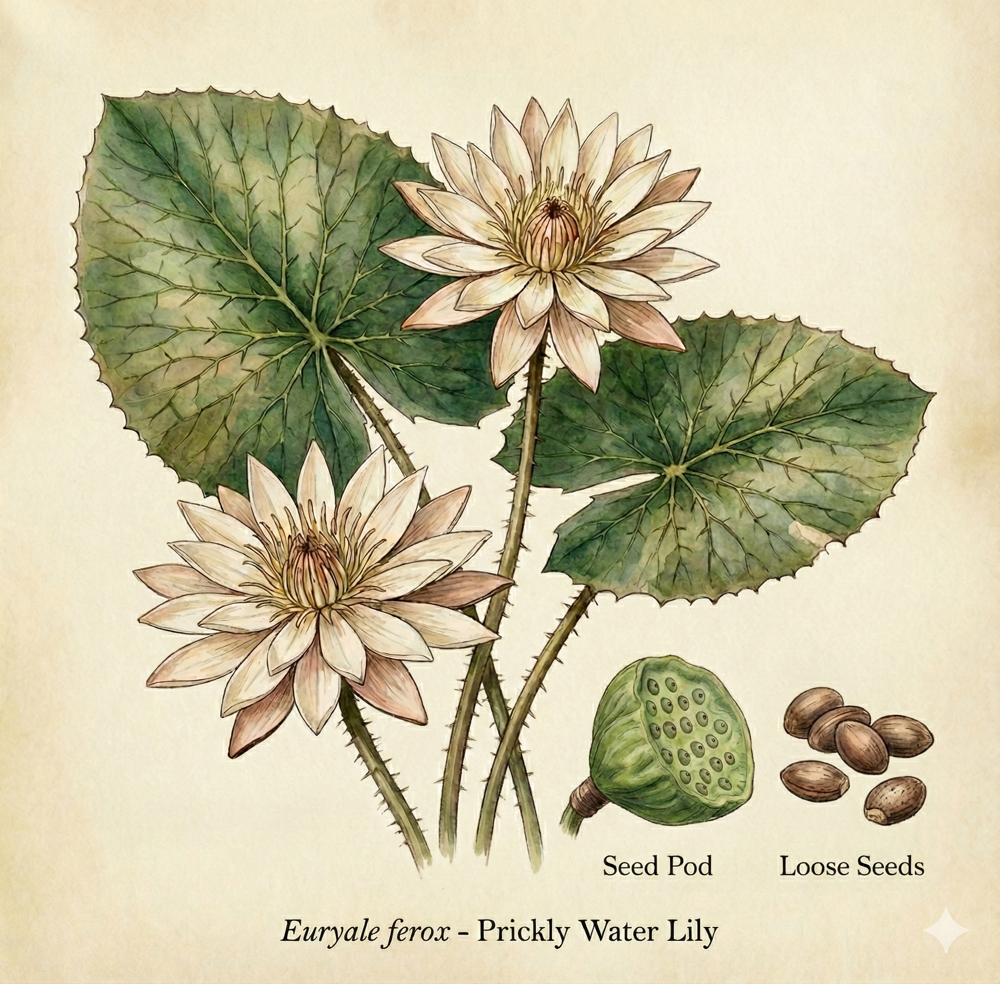
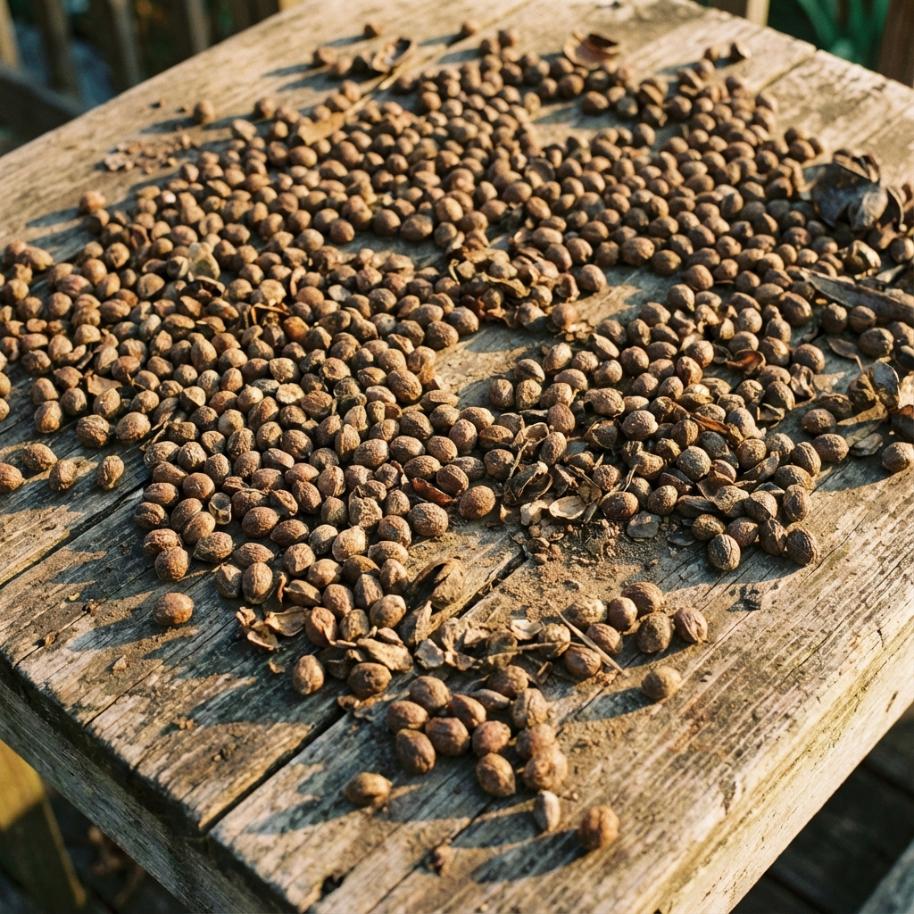
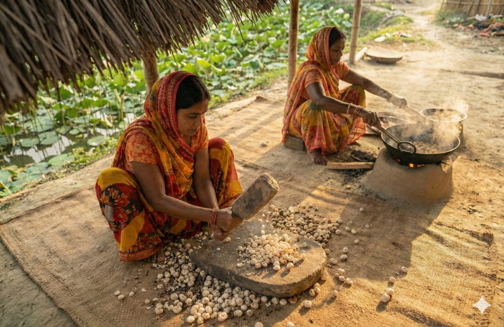
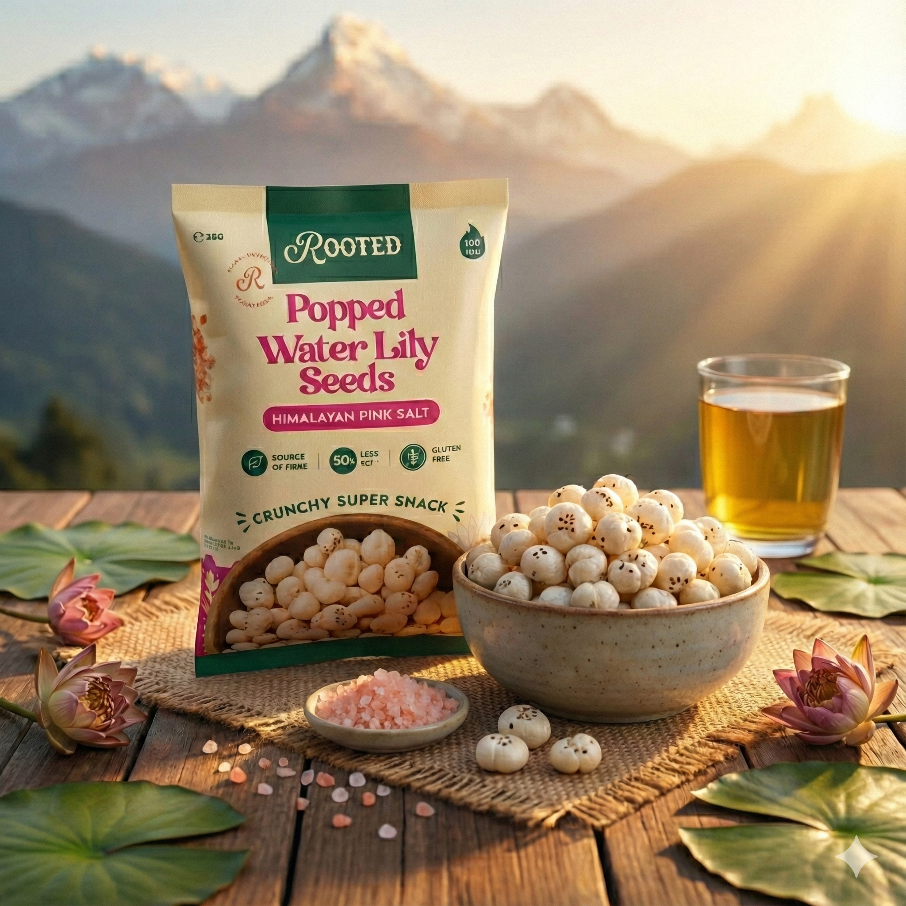
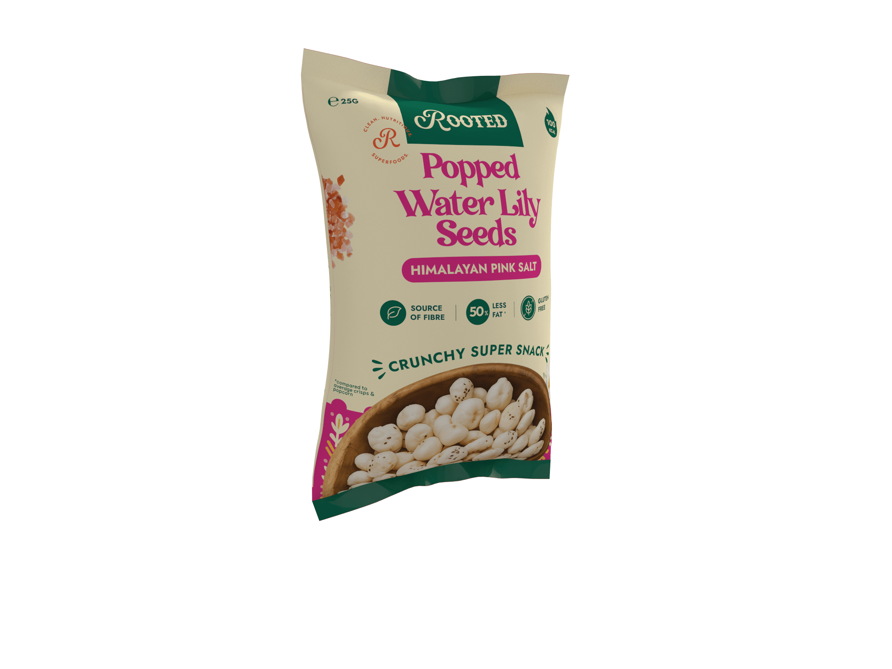
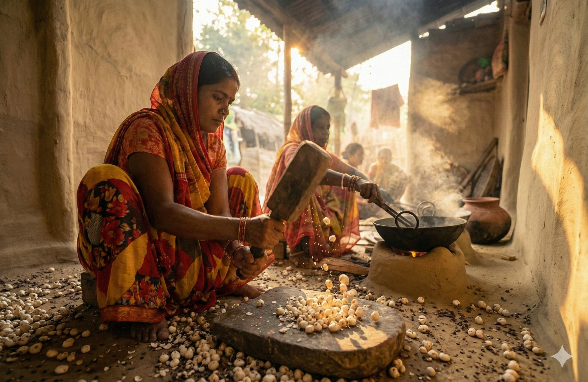
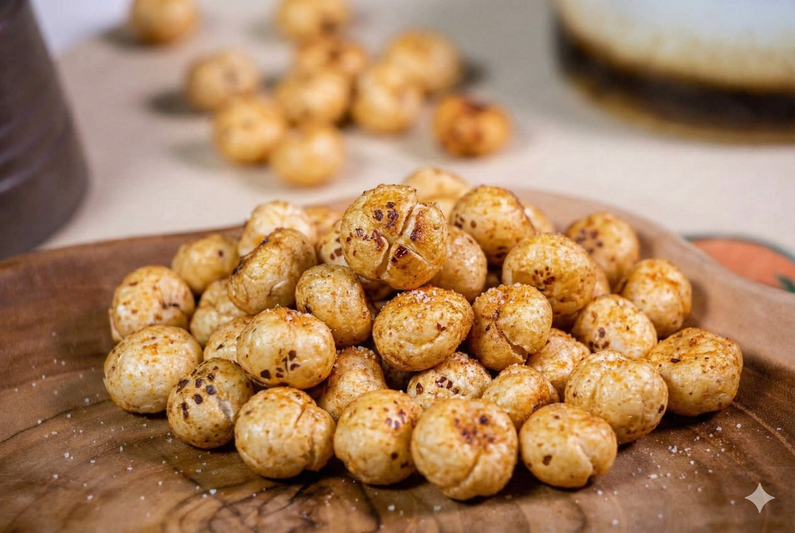
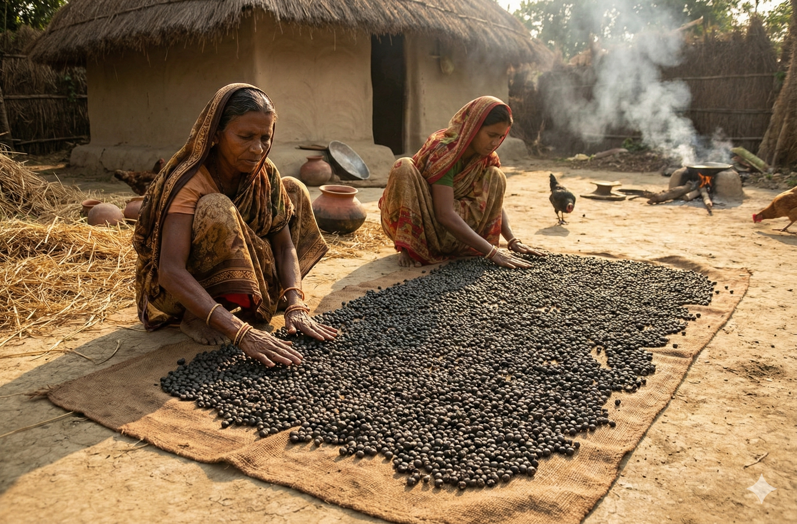

Euryale Ferox
Native to Eastern India
Born in the
Still Waters.
Before it was a snack, it was a seed. Harvested from the Euryale ferox lily in the ponds of Bihar, India, our seeds are hand-picked by farming communities that have cultivated them for centuries.
No machinery, no chemicals. Just sun, water, and tradition.
Follow the JourneyThe Ritual
From seed to snack, a process perfected by time and patience.
Harvested
Farmers dive into the ponds to hand-pick the prickly water lily pods.

Sun-Dried
The seeds are dried under the intense Indian sun to reduce moisture naturally.
Roasted & Popped
Roasted in clay pots over a fire, then hand-popped with a wooden mallet.


Seasoned
Tossed in olive oil and dusted with Himalayan Pink Salt. Simple. Perfect.
Harvested
Farmers dive into the ponds to hand-pick the prickly water lily pods.
Sun-Dried
The seeds are dried under the intense Indian sun to reduce moisture naturally.
Roasted & Popped
Roasted in clay pots over a fire, then hand-popped with a wooden mallet.
Seasoned
Tossed in olive oil and dusted with Himalayan Pink Salt. Simple. Perfect.

Swipe to explore the journey →
The Pantry
Himalayan Pink Salt
The classic. Lightly roasted and dusted with mineral-rich pink salt crystals. A pure, unadulterated crunch that satisfies the soul.
Nutrition Facts
Love from the Community
“”
Join the Movement
Follow us @weare_rooted for daily inspiration.


